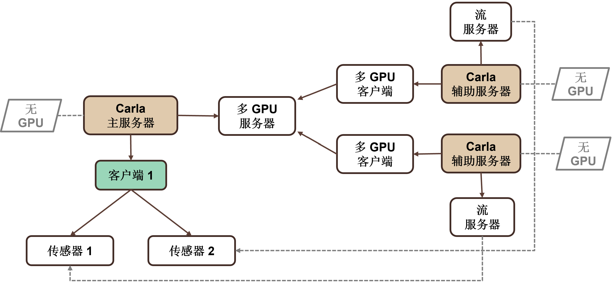

Carla 多 GPU 功能
Carla 中的多 GPU 意味着用户可以启动多个服务器（称为辅助服务器），这些服务器将使用系统中的专用 GPU 为主服务器（称为主服务器）执行渲染工作。主服务器将用户创建的传感器分发到不同的可用辅助服务器。

我们需要启动主服务器（通常带有一个 -nullrhi 标志以避免使用 GPU）。该服务器将处理所有物理数据并将场景数据同步到其他辅助服务器。然后，我们可以根据需要启动任何辅助服务器（通常是系统中的每个辅助服务器对应一个专用 GPU），使用我们将进一步描述的参数。此后，客户端可以连接（始终连接到主服务器）并照常进行。整个系统对用户来说是透明的，用户不需要知道传感器数据来自哪个服务器，他只需直接从辅助服务器接收数据。
主服务器
步骤是: 首先，启动没有任何渲染功能的主服务器。我们可以使用的参数有：
-nullrhi: 禁用所有渲染功能（无需 GPU）-carla-primary-port: 用于监听辅助服务器的 TCP 端口（默认 2002）
例如
./CarlaUE4.sh -nullrhi
默认情况下，主服务器将使用端口 2002 来监听辅助服务器。如果您需要监听另一个端口，则可以使用标志更改它：
./CarlaUE4.sh -nullrhi -carla-primary-port=3002
辅助服务器
然后我们需要启动尽可能多的服务器，但理想的情况是辅助服务器和 GPU 的数量一样多的。通过参数，我们需要指定服务器使用的 GPU 以及主服务器正在监听的主机/端口，并带有以下标志：
-carla-rpc-port：接受客户端连接的 TCP 端口（对于辅助服务器来说不需要，但端口需要空闲）-carla-primary-host: 要连接的主服务器的 IP 地址-carla-primary-port: 要连接的主服务器的 TCP 端口-ini:[/Script/Engine.RendererSettings]:r.GraphicsAdapter: 告诉该辅助服务器使用哪个 GPU 设备
例如，如果主服务器与辅助服务器在同一台计算机上执行并使用默认端口，我们可以使用以下命令：
./CarlaUE4.sh -carla-rpc-port=3000 -carla-primary-host=127.0.0.1 -ini:[/Script/Engine.RendererSettings]:r.GraphicsAdapter=0
这里，辅助服务器将使用端口 3000 作为 RPC 服务器，以避免与其他端口冲突（但永远不会使用它），并将以默认端口（2002）连接到位于 IP 127.0.0.1（localhost）的主服务器，并且该服务器将使用 GPU 设备 0。
如果我们想使用另一个 GPU 在同一台机器上启动另一个辅助服务器，我们可以使用以下命令：
./CarlaUE4.sh -carla-rpc-port=4000 -carla-primary-host=127.0.0.1 -carla-primary-port=2002 -ini:[/Script/Engine.RendererSettings]:r.GraphicsAdapter=1
该辅助服务器将使用端口 4000 作为 RPC 服务器，以避免与其他端口冲突，并将通过端口 2002 连接到位于 IP 127.0.0.1 的主服务器，并且该服务器将使用 GPU 设备 1。
同步模式
第一个从服务器连接到主服务器后，系统自动设置为同步模式，默认值为 1/20 增量秒。